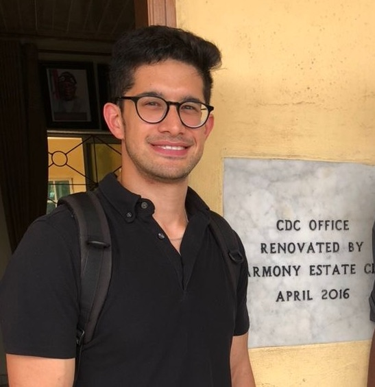

Bio

I am a PhD Candidate in Political Science at the Massachusetts Institute of Technology, where I am a Graduate Fellow at the Global Diversity Lab. I study comparative political behavior, with a focus on urban politics in the Global South. My dissertation examines how urban mobility shapes political participation in Lagos, Nigeria. Other research interests include ethnic politics and public service provision.
Prior to MIT, I worked on international development in Bangladesh and Washington, DC. I received an undergraduate degree in Public Policy Analysis and Anthropology from Pomona College.
CV
Publications
Race, nationality, and partisanship shape U.S. public support for climate disaster aid: Evidence from two survey experiments (with Volha Charnysh, Evan Lieberman, and Erin Walk). 2026. PLOS One.
We examine how race, nationality, and political partisanship influence U.S. public support for climate-related disaster aid. Using two preregistered survey experiments (N = 7,511), we varied the race (Black/White) and nationality (U.S./Brazil or South Africa) of flood victims depicted in an artist’s rendering of a fictional disaster. Respondents were significantly less supportive of aid to Global South victims than U.S. victims, with the gap largest among Republicans. Race effects were smaller and context-dependent: domestically, White Republicans expressed less generosity towards Black than White victims, while White Democrats showed the opposite tendency. Our analysis provides suggestive evidence that perceptions of social distance and deservingness shape willingness to provide climate aid across racial and national lines.
How Information About Historic Carbon Emissions Affects Support for Climate Aid: Evidence from a Survey Experiment. (with Volha Charnysh, Evan Lieberman, and Erin Walk). Climatic Change.
In recent years, international climate negotiations have reached increasing consensus that the wealthiest countries should make significant financial contributions to offset the damages caused by the climate crisis in poorer countries. Proponents have justified such action based on wealthy countries’ disproportionate responsibility for global warming in the form of past emissions. However, in democratic countries such as the United States, it remains uncertain whether such messages can affect public opinion, especially across partisan lines. We conducted a pre-registered survey from a national online pool (N = 5,002) with a built-in experiment to evaluate the effectiveness of alternative communications strategies associated with historic carbon emissions in increasing support for climate aid. We find that specific attribution claims that reflect a climate justice perspective do boost support for more generous climate aid, but the effects are largely driven by Democrats. We also find that global solidarity frames emphasizing shared responsibility did not affect support for climate aid. Our results have important implications for climate advocacy and our understanding of climate-related attitudes.
Locking Down Adolescent Hunger: COVID-19 and Food Security in Bangladesh (with Jennifer Seager, Sarah Baird, and Saladin Tauseef). 2023. Applied Economic Perspectives and Policy.
Policy responses to slow the spread of COVID-19 have increased economic insecurity globally. We use panel data collected immediately before and during the COVID-19 pandemic with adolescents in Bangladesh to assess the association between COVID-19-related restrictions and adolescent hunger. One year into the pandemic, adolescents were three-fold more likely to report hunger, and households were twice as likely to report cutting back food to adolescents compared to before COVID-19 restrictions. Vulnerable households experienced larger increases in hunger and reductions in food consumption, with girls more adversely affected than boys. Cash and food aid were unable to mitigate these negative trends.
- `We Are Not Allowed’: Barriers to Rohingya refugees’ educational and economic opportunities (with Silvia Guglielmi, Jennifer Seager, Khadija Mitu, Sarah Baird, and Nicola Jones). 2021. In Adolescents in Humanitarian Crisis. Routledge.
Working papers
Roving Citizens: Commuting, Urban Mobility, and Political Participation in Developing Democracies (job market paper)
Commutes are an inescapable part of the urban experience, particularly in contexts where rapid urbanization and inadequate infrastructure have produced sprawling cities with bottle-necked congestion and many urbanites spending hours on the road. How does commuting affect political behavior? Existing theories of political behavior, largely developed and tested in the Global North, argue that commuting is a demobilizing force, isolating individuals from social networks in their home neighborhoods and reducing social capital. I posit that commuting can play another, complementary role by connecting people to social ties across neighborhood lines, which I call distal ties. These distal ties are particularly useful in developing democracies, where individuals often have to rely on social ties to access information to help navigate the state or connect with politically powerful intermediaries. Using an original survey of 1,641 Lagosians, qualitative data from fieldwork and interviews, and administrative and scraped data, I present evidence in concordance with this theory from Lagos, Nigeria. I find that commute time, acting as a proxy for time spent commuting and distance from home, is positively associated with more non-electoral participation, specifically around contacting government officials. This relationship is robust to multiple specifications and robustness checks. I present additional qualitative data and observational findings that commuting allows individuals to access more distal social ties across neighborhood lines and can channel these ties to engage with the state.
Demanding Diversity or Avoiding Differences? Demographic Preferences in Nigeria
As diverse countries urbanize, people tend to migrate from homogeneous rural areas to heterogeneous cities, opening up new opportunities for intergroup interaction. While scholars have extensively studied the positive and negative effects of intergroup interactions, we know much less about the extent to which citizens of diverse countries seek out intergroup contacts. Do people prefer completely homogeneous spaces, where they only interact with their ingroup, or do they prefer more diverse environments, where people will interact with outgroups? Through the case of choosing urban neighborhoods in Nigeria, I explore whether people hold preferences for homogeneity or diversity using a set of online experiments conducted, supplemented by qualitative interviews conducted in Abuja and Lagos. I find that preferences are neither linear nor absolute. On average, I find that respondents have mild preferences for coethnic-majority neighborhoods, but not necessarily completely homogeneous neighborhoods. These preferences also vary based on the context of the city where they are moving and the outgroup in question. Further analysis of the conjoint and vignette experiments points to concerns around violence and safety as a potential driver of preferences. I also find that preferences for coethnic neighborhoods are correlated with residential choice, suggesting that these preferences map onto for behavior.
Research in progress
Roving Citizens, Stationary Institutions: Urban Mobility and Political Behavior in Developing Democracies (dissertation)
Urban Mobility, Exposure, and Policy Preferences: An Experimental Study in Lagos, Nigeria
If You Build It, They Will Vote: How Infrastructure Builds Support for Public Transit (with Justin de Benedictis-Kessner and Toby Nowacki)
Registration Mismatch in African Democracies (with Marco Castradori)
Teaching
Kaufman Teaching Certificate Program, MIT Teaching and Learning Lab (Spring 2026)
Political Science Math Fresher, MIT Political Science (Fall 2024)
17.50: Introduction to Comparative Politics, Professor Chappell Lawson (Fall 2023)
Website template by Apoorva Lal